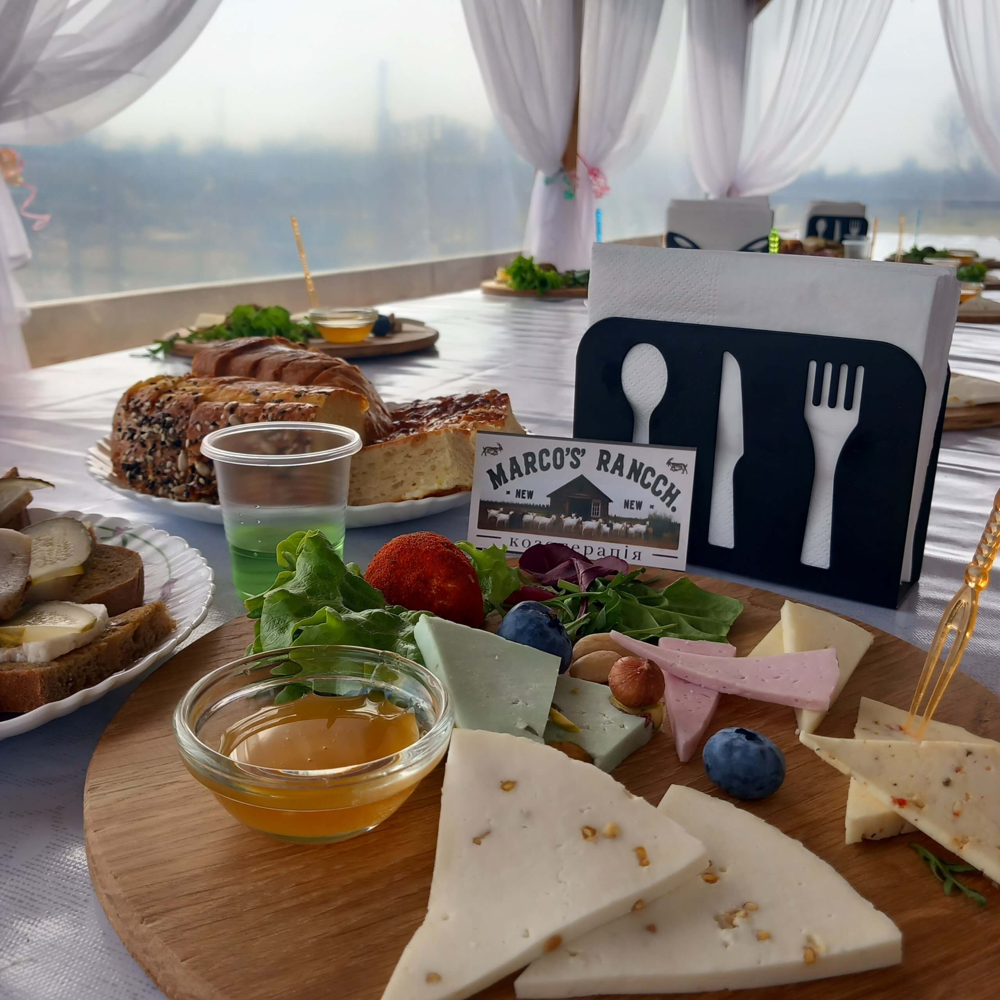

~1.5 години
ЗНАЙОМСТВО З ФЕРМОЮ
Базова екскурсія
Годування козочок, дегустація сирів та випічки, можливість придбати продукцію одразу.
- Годування та спілкування з козами
- Дегустація 5 видів сирів
- Скуштувати свіжу випічку
- Екскурсія територією ферми
- Фото з тваринами